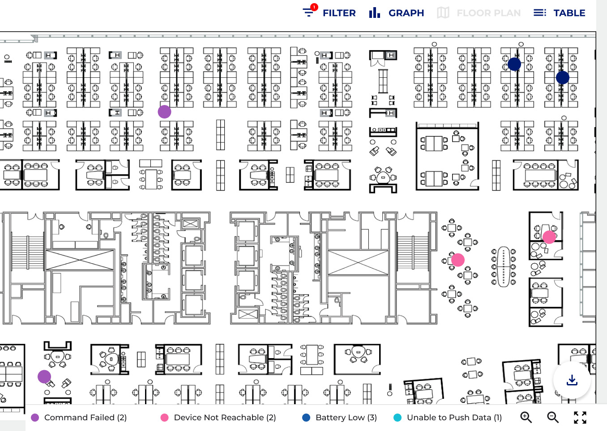
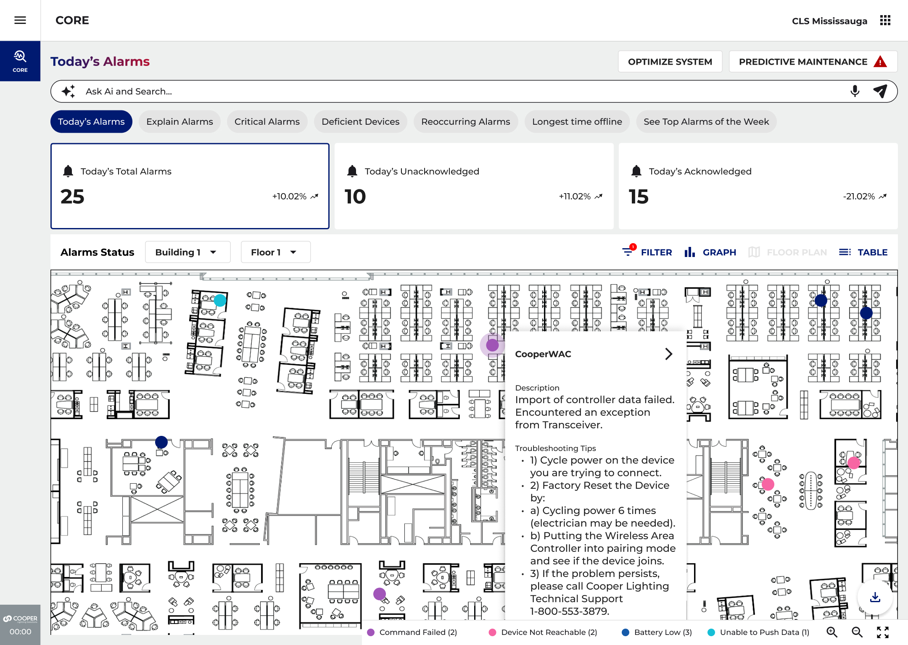
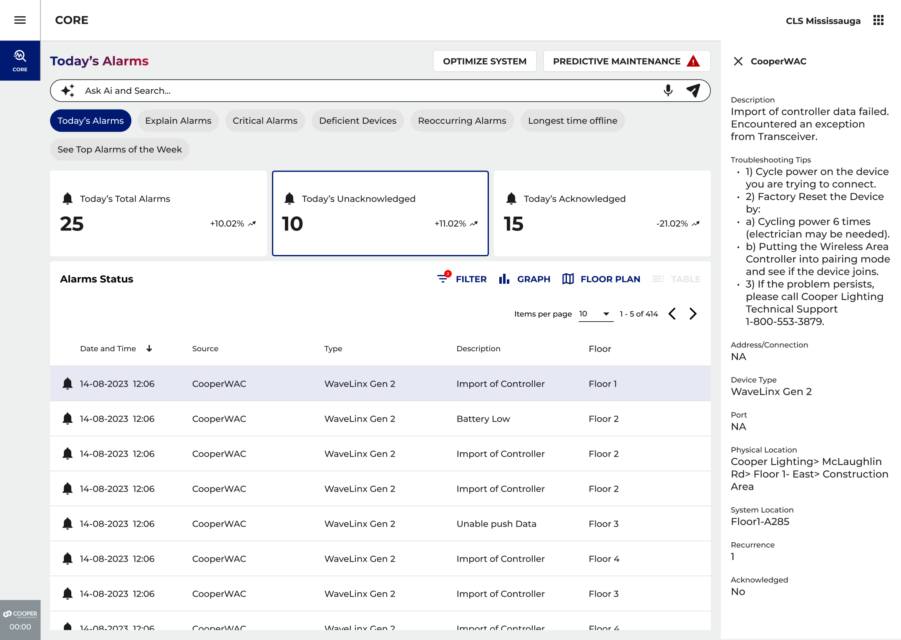
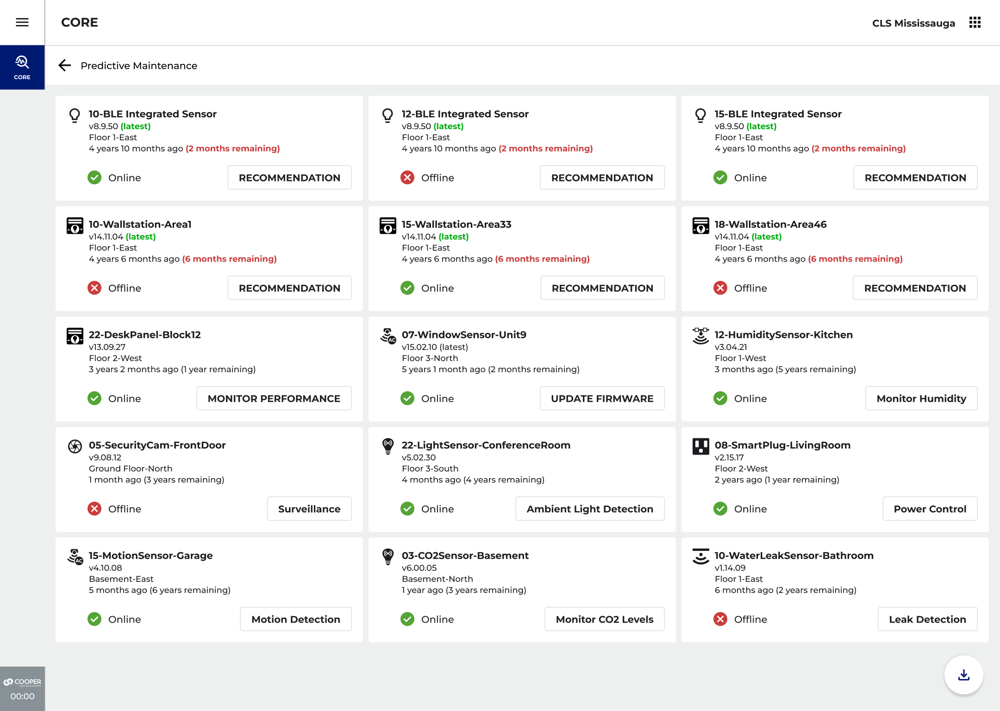
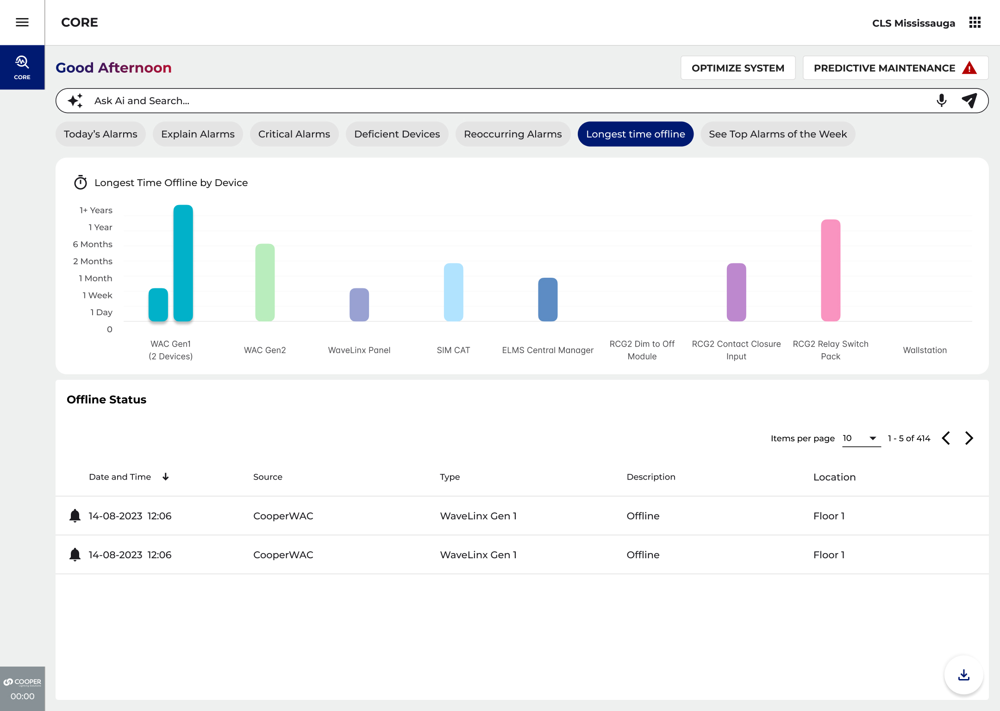
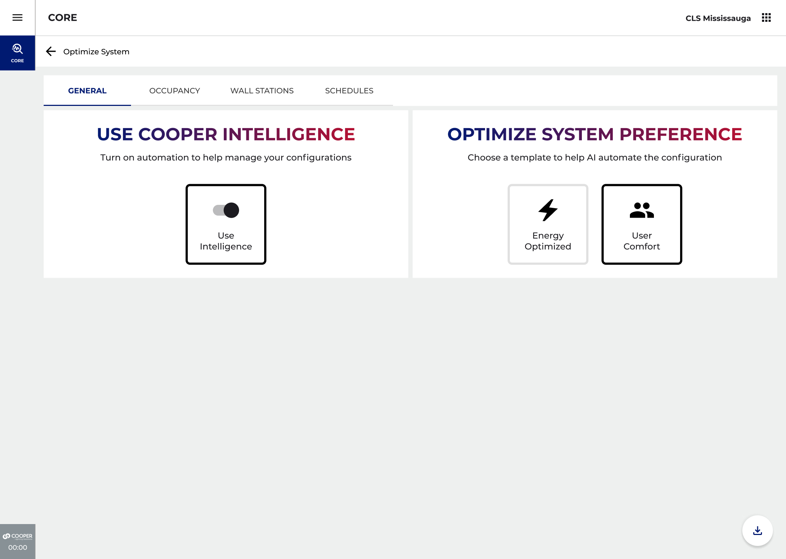
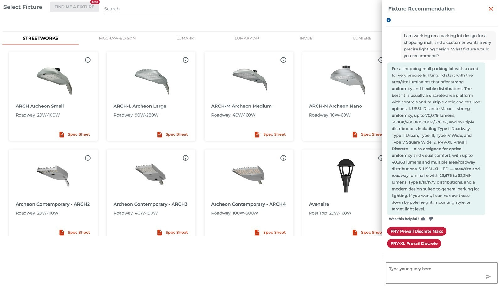
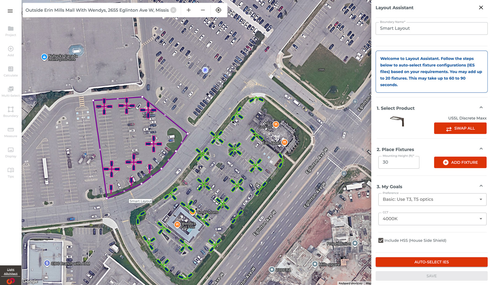
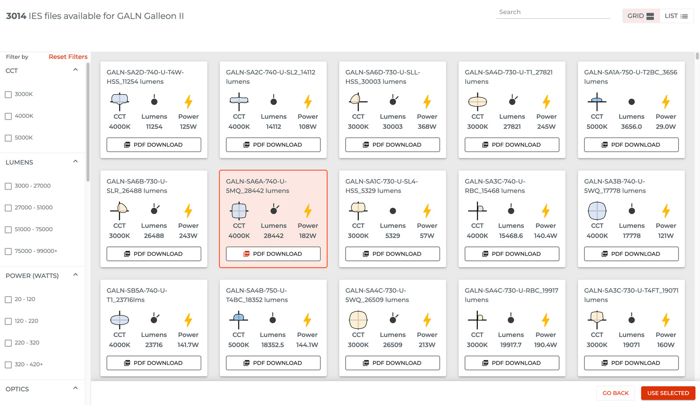

A wall of error codes, turned into a conversation
CORE is the software that watches over every light, sensor and switch in a company's buildings. On a big site that is thousands of things, and every one of them can report a problem. The trouble was the reporting: a stream of codes and numbers that only a handful of experts could read. And nobody found out a light was in trouble until the day it stopped working.
My job was to work out where AI actually belonged in a product people already used every day. Not a chatbot bolted onto the corner of the screen, but help sitting right where the work happens. It came down to three ideas: you can just ask it a question, it explains every problem in words you understand, and it warns you before something breaks.
Messages only an expert could read
One large site can have hundreds of devices throwing hundreds of messages a day. Almost none of them meant anything to the person who had to go and fix them. That gave the AI an obvious job on day one.
One box. Ask the building anything.
One search bar sits at the top of every screen, with one-tap buttons for the questions people ask every morning. The same answer comes back three ways: pinned on a floor plan, counted up building by building, or listed out plainly.



Explain it, then say what to do
AI only earns its keep if it helps the person standing in a dark hallway at 2am. So every answer had to do two things: explain what happened, and give one clear next step. No open-ended chatting. Every answer points at a real device, so you can check it.
Every alert becomes a plan
The Explain panel puts the cause in one plain sentence and the fix in a numbered list. The maintenance view sorts devices by how long they have been quiet and how much life they have left, so the worst ones float to the top.



From a sentence to the exact light
The same help reaches the people choosing and selling the lights. Describe what you need in a sentence and it comes back with specific products. From there you can search a library of 5,000 light files, and let it drop the lights onto a map of the real site for you.




5,000 light files, filtered and exported in one click · the layout helper drops up to 20 lights into an area to hit the brightness you asked for, evenly.
Built for the person who gets the call
Pointing the AI at something people already hated, that wall of error codes, gave it an obvious job from day one. What comes next is making it show its working: why it thinks a light is about to fail, not just that it does, and what it has learned since it started tuning the building.


What it added up to
The goal was never to bolt AI onto a dashboard. It was to make a building with 400 devices answer a question, and tell you what to do next, the way the best technician on the team would.